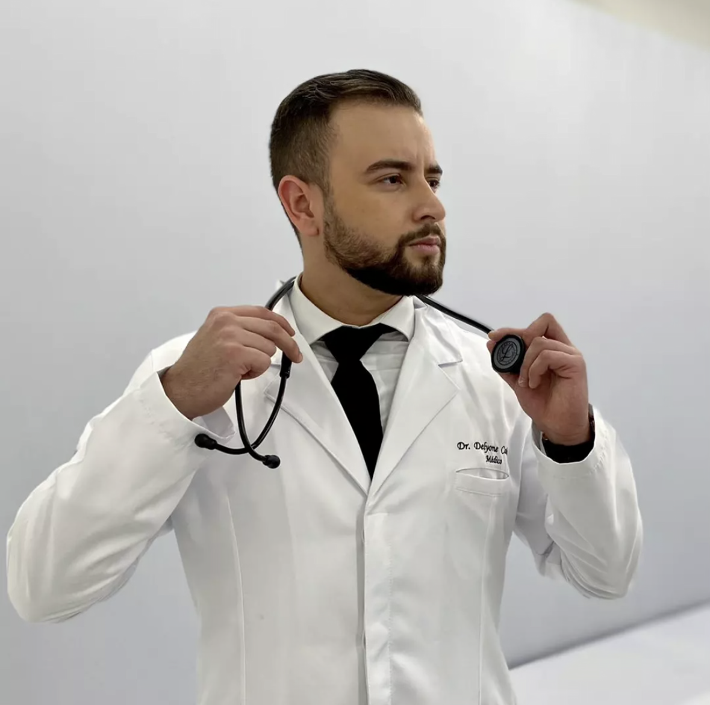

ACLS — American Heart Association
Suporte Avançado de Vida em Cardiologia, pela American Heart Association.
Instituto Delyone de Medicina e Tecnologia
Presidente fundador
Médico, pesquisador e fundador do Instituto Delyone de Medicina e Tecnologia. Sua trajetória conecta assistência médica, organização de serviços de saúde, educação e pesquisa ao desenvolvimento de soluções tecnológicas.

Trajetória profissional
Graduado em Medicina pela Universidade Federal do Tocantins, Dr. Delyone desenvolveu sua trajetória em diferentes cenários assistenciais, com atuação em urgência, emergência e terapia intensiva. Sua experiência envolve avaliação e manejo de pacientes graves, tomada de decisão em contextos de tempo crítico e trabalho integrado com equipes multiprofissionais.
Na área de regulação e organização hospitalar, atuou em processos de regulação de leitos e fluxos assistenciais. Também participou da fundação e estruturação de um Núcleo Interno de Regulação (NIR), iniciativa voltada à articulação entre equipes e à organização do acesso aos recursos hospitalares.
Na educação médica, possui pós-graduação lato sensu em Educação em Saúde – Preceptoria Médica e desenvolveu atividades de preceptoria e acompanhamento de estudantes, contribuindo para a formação clínica e para o desenvolvimento do raciocínio diagnóstico e da tomada de decisão.
Compromisso com a comunidade
Durante a pandemia de COVID-19, participou por quase dois anos de plantões voluntários vinculados à iniciativa Orienta+COVID-19, da Universidade Federal do Tocantins. A experiência incluiu atendimento remoto e orientação em saúde à comunidade em um período de grande necessidade assistencial.
Formação complementar
Suporte Avançado de Vida em Cardiologia, pela American Heart Association.
Capacitação em atendimento tático a vítimas de combate, pela Academia Nacional de Polícia — Polícia Federal.
Credenciais e percurso internacional
Possui credenciais de formação médica verificadas pela Educational Commission for Foreign Medical Graduates (ECFMG), entidade responsável pela certificação de médicos graduados fora dos Estados Unidos para fins de ingresso em programas de formação médica naquele país.
Também informa registro junto ao General Medical Council (GMC), do Reino Unido, sob o número 8173513. Essas credenciais integram seu percurso de preparação para oportunidades e atuação em contextos internacionais.
Participação cidadã
Participou do Conselho de Usuários do Ministério da Saúde e apresentou proposta voltada à melhoria dos sistemas de saúde, que foi acolhida no âmbito da participação social.
Reconhecimento e pesquisa independente
Aos 14 anos, recebeu honra ao mérito na Olimpíada Brasileira de Matemática.
Também desenvolve uma proposta teórica em física que busca explorar uma formulação complementar à teoria da relatividade. O trabalho encontra-se em desenvolvimento e em processo de preparação/submissão para avaliação editorial; suas hipóteses ainda dependem de análise científica independente e não são apresentadas como teoria estabelecida ou resultado validado.
Pesquisa e desenvolvimento
Seus interesses de pesquisa e desenvolvimento abrangem saúde, cognição, linguagem e inteligência artificial. Essa perspectiva interdisciplinar orienta a criação de estruturas e ferramentas que buscam aproximar o conhecimento científico dos desafios concretos da prática médica.
À frente do Instituto, dedica-se ao desenvolvimento de iniciativas voltadas ao raciocínio clínico estruturado, à organização da informação e à criação de tecnologias para a formação e o trabalho em saúde.
Iniciativas do Instituto
Projeto de simulação e aprendizagem clínica que explora a estruturação do raciocínio diagnóstico e a tomada de decisão.
Iniciativa de organização e apoio à documentação clínica, com foco na estruturação de informações médicas.
Projeto dedicado à normalização semântica e à organização de termos e informações em saúde.
Desenvolvimento de conceitos e ferramentas que conectam medicina, linguagem, sistemas computacionais e inteligência artificial.
“Desenvolver tecnologia a partir das necessidades reais da medicina — conectando assistência, pesquisa e inovação.”